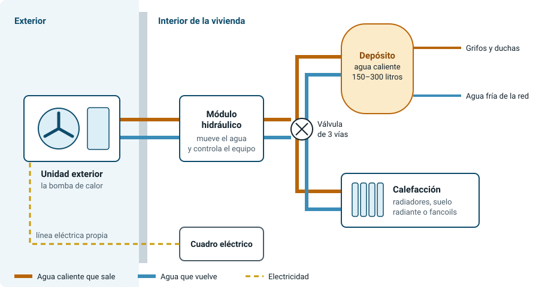

Esquema de una instalación de aerotermia
Actualizado el 21 de noviembre de 2026 · Cómo verificamos los datos
Una instalación de aerotermia tiene cinco piezas principales: la unidad exterior, que capta el calor del aire; el módulo hidráulico, que mueve el agua y lo controla todo; la válvula de tres vías, que reparte el calor; el depósito de agua caliente; y los emisores de calefacción.

Las piezas, una a una
Unidad exterior
Es la bomba de calor propiamente dicha. Tiene un ventilador que hace pasar el aire de la calle por un intercambiador, y un compresor que sube la temperatura del calor captado. En un equipo monobloc, como el del dibujo, también lleva el intercambiador que calienta el agua. Cómo funciona por dentro está explicado en qué es la aerotermia.
Módulo hidráulico
Dentro de casa. Contiene la bomba de circulación que mueve el agua, el vaso de expansión, los sensores, la centralita y, a menudo, la resistencia eléctrica de apoyo. En los equipos «todo en uno» comparte mueble con el depósito de agua caliente.
Válvula de tres vías
Decide adónde va el agua caliente: al depósito, cuando hace falta agua sanitaria, o a la calefacción. Normalmente el agua caliente sanitaria tiene prioridad, así que durante el rato en que se calienta el depósito la calefacción se detiene.
Depósito de agua caliente sanitaria
Acumula el agua de duchas y grifos, normalmente entre 150 y 300 litros. Dentro lleva un serpentín por el que pasa el agua de la bomba de calor: calienta el agua del depósito sin mezclarse con ella.
Emisores
Reparten el calor por la casa: suelo radiante, radiadores o fancoils. Cuál conviene lo explicamos en suelo radiante, radiadores o fancoils.
Línea eléctrica y control
La unidad exterior necesita una línea propia desde el cuadro eléctrico, con su protección. El control se hace desde la pantalla del módulo, un termostato de pared o una aplicación.
Piezas que no siempre aparecen
| Pieza | Para qué sirve | Cuándo hace falta |
|---|---|---|
| Depósito de inercia | Añade agua al circuito para que la máquina no arranque y pare continuamente | Circuitos con poca agua o muchos termostatos que cierran zonas |
| Filtro magnético | Retiene lodos y partículas metálicas | Siempre recomendable, y casi imprescindible con radiadores antiguos |
| Válvula mezcladora | Baja la temperatura del agua para un circuito concreto | Instalaciones con suelo radiante y radiadores a la vez |
| Protección antiheladas | Evita que se congele el agua de las tuberías exteriores | Equipos monobloc en zonas con heladas |
| Caldera de apoyo | Aporta calor en los días más fríos | Sistemas híbridos |
Variantes habituales
Bibloc
Entre la unidad exterior y la interior viaja gas refrigerante en lugar de agua, y el intercambiador está dentro de casa. Lo comparamos en monobloc o bibloc, con su propio esquema.
Con refrigeración
El mismo circuito sirve para enfriar si los emisores lo permiten: suelo radiante y refrescante con control de humedad, o fancoils con desagüe para el agua que condensan.
Sistema híbrido
Se mantiene la caldera de gas y se añade una bomba de calor más pequeña. Una centralita decide cuál funciona según la temperatura exterior y los precios.
Con placas solares
La bomba de calor se programa para trabajar en horas de sol, o recibe una señal del inversor solar para aprovechar los excedentes. Lo explicamos en aerotermia con placas solares.
Lo que conviene revisar en tu instalación
- Que haya filtro a la entrada del equipo y se limpie en la revisión anual.
- Que la presión del circuito esté en el rango que indica el manual.
- Que las tuberías exteriores estén bien aisladas.
- Que la unidad exterior tenga aire libre alrededor y el desagüe despejado.
Esquema de elaboración propia que representa una instalación monobloc típica. Cada fabricante define en su manual la configuración y los componentes de sus equipos.
Preguntas frecuentes
¿Qué es la válvula de tres vías?
Una válvula motorizada que decide adónde va el agua caliente que produce la bomba de calor: al depósito de agua sanitaria o al circuito de calefacción. La bomba de calor atiende uno u otro, no los dos a la vez.
¿El agua de la calefacción y la de la ducha se mezclan?
No. Son circuitos separados. El agua de la calefacción calienta el depósito a través de un serpentín o intercambiador, y el agua de la red que sale por los grifos se calienta sin mezclarse con ella.
¿Qué es el vaso de expansión?
Un pequeño depósito con una membrana que absorbe el aumento de volumen del agua al calentarse. Evita que suba demasiado la presión del circuito.